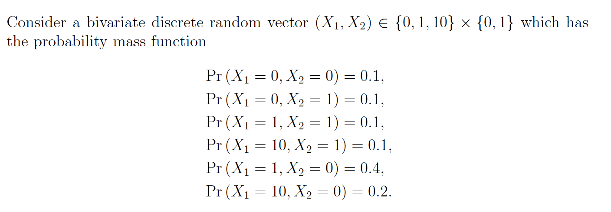
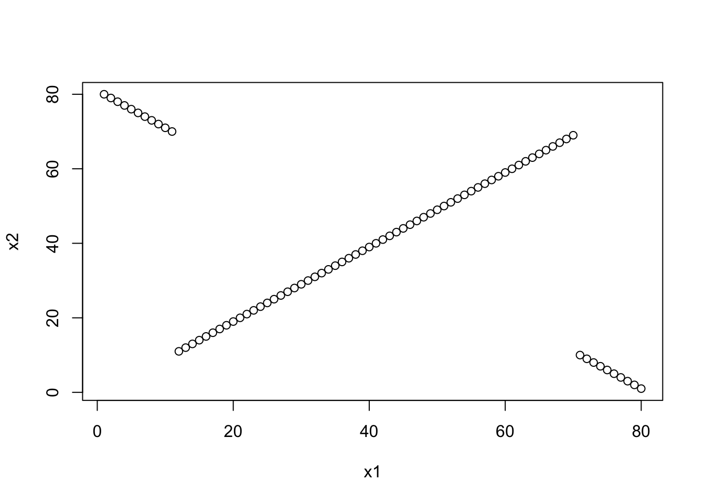
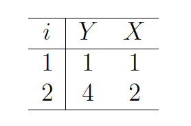
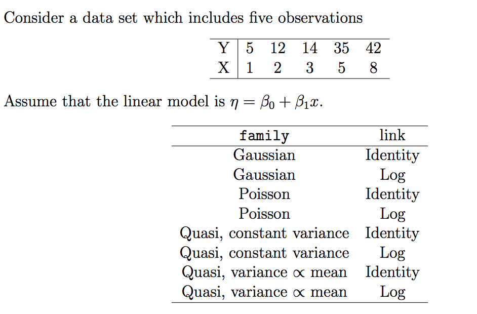
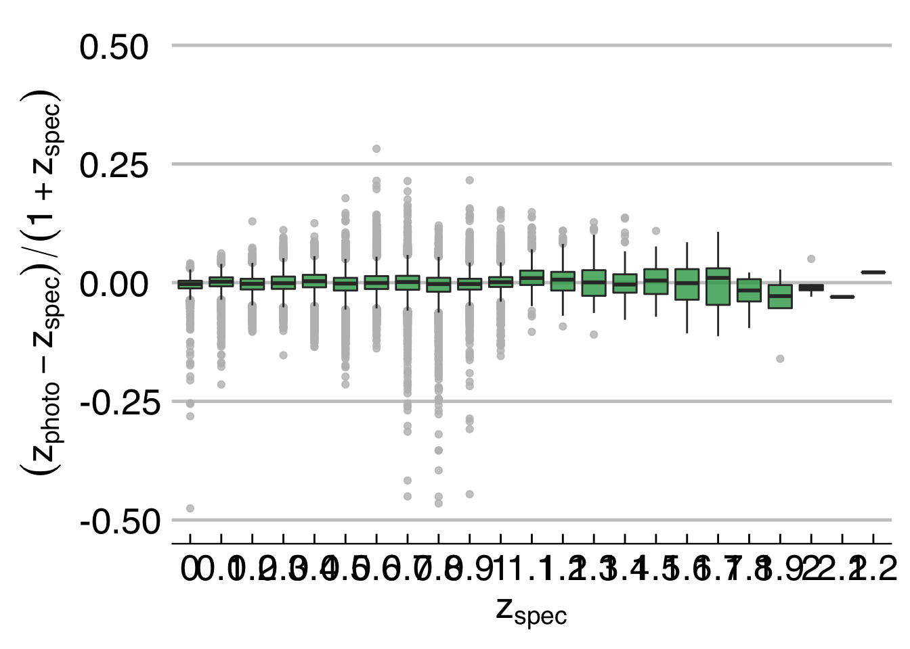
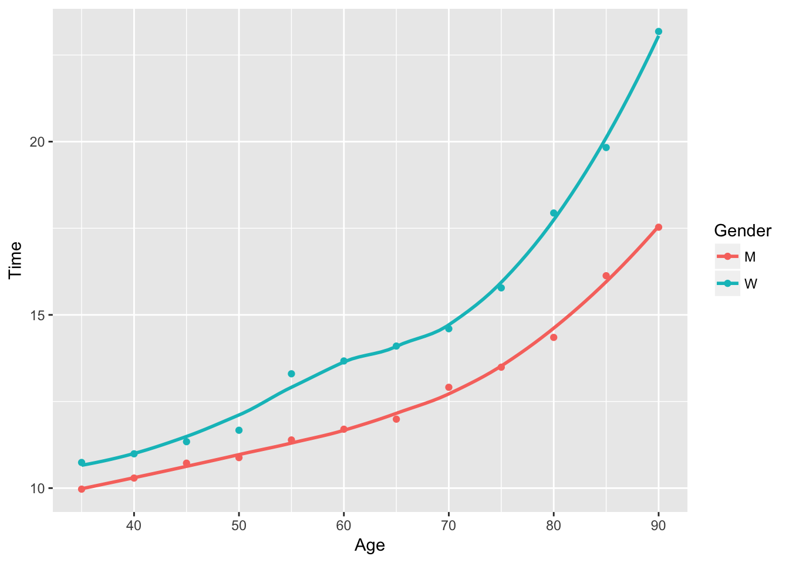
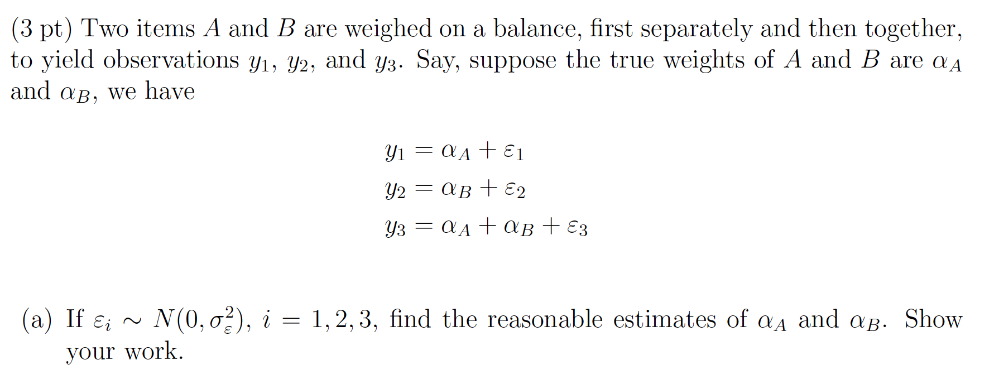
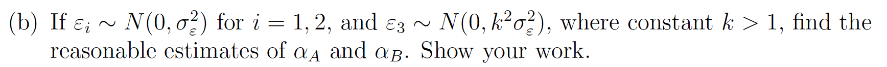
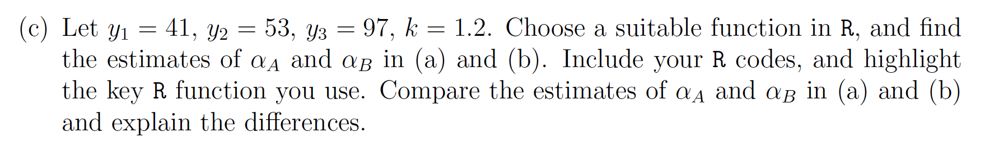

General Linear Models
-Pearson’s correlation coefficient is a measure of linear correlation between two variables \(X\) and \(Y\). It has a value between +1 and −1, where 1 is total positive linear correlation, 0 is no linear correlation, and −1 is total negative linear correlation. The formula when applied to a population is given by \[\rho_{X,Y} = \frac{cov(X,Y)}{\sigma_X\sigma_Y}\] The sample Pearson’s correlation coeffiecient \(r\) can be calculated by plugging in estimates for the population parameters. \[r = \frac{\sum_{i=1}^n(x_i-\overline{x})(y_i-\overline{y})}{\sqrt{\sum_{i=1}^n(x_i-\overline{x})^2}\sqrt{\sum_{i=1}^n(y_i-\overline{y})^2}}\] This formula aids the interpretation that the correlation is positive when both the \(x_i\) and \(y_i\) values lie above their their respective mean and negative when they lie on opposite side of their respective mean. The stronger this tendency is, the larger the magnitude of the correlation coefficient.
-Spearman’s rank correlation coefficient is defined as the Pearson correlation coefficient between the ranked variables and denoted \(r_s\). To compute it on a sample of size \(n\), first the raw scores \(X_i,Y_i\) are transformed into their corresponding ranks in ascending order denoted \(rgX_i,rgY_i\). In a bivariate sample, each variable is ranked and the correlation is computed: \[r_s = \rho_{rg_xrg_Y}\frac{cov(rg_X,rg_Y)}{\sigma_{rg_x}\sigma_{rg_Y}}\] The advantage of \(r_s\) is that it can assess non-linear monotonic relationships between two variables. It will have a value of 1 is one variable is a strictly monotonic function of the other. For example, the dataset \(\{(1,1),(2,4),(3,8),(4,16)\}\) is exponentially related and has the property \(rgX_i = rgY_i\). Identical values are usually each assigned fractional ranks equal to the average of their positions in the ascending order of the values. However, if all the ranks are distinct integers, there is the formula \[r_s =1-\frac{6\sum d_i^2}{n(n^2-1)}\] where \(d_i = rg(X_i) - rg(Y_i)\) is the difference in ranks of an observation. Note that an important advantage of the Spearman Correlation is that it is less sensitive to outliers because Spearman’s rho limits the outlier to the value of its rank.
-Kendall’s tau coefficient
Let \((x_i,y_i)\) and \((x_j,y_j)\) be two distinct observations in a bivariate sample. Then the observations are concordant if the ranks for both elements agree: \(y_i<y_j\) or if \(x_i>x_j\) and \(y_i>y_j\). The observations are discordant if the ranks disagree: \(x_i<x_j\) and \(y_i>y_j\) or if \(x_i>x_j\) and \(y_i<y_j\). The pair of observations is neither if the ranks are equal. The Kendall \(\tau\) coefficient is defined as \[\tau = \frac{\text{(number of concordant pairs) - (number of discordant pairs)}}{n(n-1)/2}\]
Where the denominator is \(\binom{n}{2}\): the number of pairs of observations in the sample, so \(-1\leq \tau \leq 1\). An advantage of Kendall’s tau is that its interpretation in terms of the probabilities of observing the agreeable (concordant) and non-agreeable (discordant) pairs is very direct.Though in most of the situations, the interpretations of Kendall’s tau and Spearman’s rank correlation coefficient are very similar and thus invariably lead to the same inferences. Spearman’s rank correlation coefficient is the more widely used rank correlation coefficient. Kendall’s Tau may be less sensitive to error and give smaller values than Spearman’s rho correlation, but the required number of computations for its calcualation can make implementation inefficient.
References:
https://en.wikipedia.org/wiki/Pearson_correlation_coefficient https://en.wikipedia.org/wiki/Spearman%27s_rank_correlation_coefficient https://statistics.laerd.com/statistical-guides/spearmans-rank-order-correlation-statistical-guide.php https://en.wikipedia.org/wiki/Ranking#Ranking_in_statistics https://en.wikipedia.org/wiki/Kendall_rank_correlation_coefficient http://www.statisticssolutions.com/kendalls-tau-and-spearmans-rank-correlation-coefficient/

#organize observations into data frame
df <- data.frame(
x_1 = rep(c(0,1,10), times = 2),
x_2 = rep(c(0,1), each = 3),
p = c(.1, .4, .2, .1, .1, .1)
)
n = 10^5
df.rows = nrow(df)
#sample from the row indices of the data frame
samples <- sample(1:df.rows, size = n, replace = TRUE, prob = df$p)
#create your sample by subsetting the data frame
my_sample <- df[samples,1:2]
knitr::kable(table(my_sample), caption = "Frequency table for sample from discrete bivariate")| 0 | 1 | |
|---|---|---|
| 0 | 9926 | 9905 |
| 1 | 39950 | 10086 |
| 10 | 20127 | 10006 |
get_cor <- function(my_method){
#function to get the 3 types of correlation coefficients
cor(my_sample$x_2,my_sample$x_1, method = my_method)
}
corrs <- c(pearson = get_cor("pearson"), spearman = get_cor("spearman"), kendall = get_cor("kendall"))
knitr::kable(data.frame(corrs))| corrs | |
|---|---|
| pearson | 0.0242226 |
| spearman | -0.0820445 |
| kendall | -0.0779843 |
sample_mean <- function(x){
weighted.mean(x, w = df$p)
}
df$rank_x1 <- rep(c(1,2,3),2)
df$rank_x2 <- rep(c(1,2),each = 3)
sample_list <- list(x1_mean = df$x_1, x2_mean = df$x_2, rank_x1_mean = rep(c(1,2,3),2), rank_x2_mean = rep(c(1,2),each = 3))
means <- lapply(sample_list, sample_mean)
rank_df <- df %>% mutate(
x1_star = x_1 - means[[1]],
x2_star = x_2 - means[[2]],
r1_star = rank_x1 - means[[3]],
r2_star = rank_x2 - means[[4]],
x_cov = x1_star * x2_star,
r_cov = r1_star * r2_star
) %>%
select(x_1, x_2, x_cov, r_cov, p)Pearson’s correlation is positive because the outlier inflates the positive contribution to the covariance.
To invstigate the covariance of the raw and the ranked data, observe this dataframe with the following transformed variables: x_cov = \((x_{i1}-\overline{x_1})(x_{i2}-\overline{x_2})\) and r_cov = \((rgx_{i1}-\overline{rgx_1})(rgx_{i2}-\overline{rgx_2})\)
| x_1 | x_2 | x_cov | r_cov | p |
|---|---|---|---|---|
| 0 | 0 | 1.05 | 0.33 | 0.1 |
| 1 | 0 | 0.75 | 0.03 | 0.4 |
| 10 | 0 | -1.95 | -0.27 | 0.2 |
| 0 | 1 | -2.45 | -0.77 | 0.1 |
| 1 | 1 | -1.75 | -0.07 | 0.1 |
| 10 | 1 | 4.55 | 0.63 | 0.1 |
Because the distribution of x_1 is skewed to the right, its mean is rather large. We can observe that the mode of the distribution x = (1,0), contributes positively to the covariance of the two variables. In the raw data, this contribution is rather high: an additional .75 for each (1,0) in our sample. Similarly the outlier (10,1) contributes 4.55 to the covariance, a large amount. However, the ranking the variables lowers the mean and reduces the effect of the outlier on the covariance. The mode (1,0) now has a negligble contribution of .03, and the contribution of largest magnitude isn’t (10,1), but instead (0,1) with a negative contribution of -.77. This helps explain the negative value of Spearman’s correlation. It is easy to see Kendall’s correlation is negative because of the overwhelming number of discordant pairs of observations.
Notice a key difference between Kendall’s \(\tau\) and Spearman’s \(\rho\) is that the former is not sensitive to the distance between rank swaps, just their frequency. This can be illustrated using a discrete distribution of distinct integers that allows us to use the shortcut formula for \(r_s\).
x1 <- 1:80
x2 <- c(80:70,11:69,10:1)
cor(x1, x2, method = "spearman")## [1] -0.1978434cor(x1, x2, method = "kendall")## [1] 0.08291139plot(x1,x2)
We can see that Spearman’s correlation is negative because of the weight of \(\sum d_i^2 = (80-1)^2 + (79-2)^2 + ...\) is very large. Kendall’s tau is not sensitive to this fact, and shows a positive correlation because of the many concordant pairs in the middle of the distribution.
Models in R can be specified using a compact formula syntax y ~ model where y is the response variable we want to measure and model specifies the formula we fit to the data. Consider a regression model where we want to predict y from \(p\) predictors: \(x_1, ..., x_p\). Different operators will specify how we include these predictors as terms in the model:
+ x_1 + x_2 indicates a linear combination of the variables: x_1:x_2 includes the interaction term \(x_1x_2\) in the model* x_1 * x_2 denotes a factor crossing: \(x_1 + x_2 +x_1x_2\)^ (x_1 + x_2 + x_3)^2 expands to a formula including the main effects of \(x_1, x_2, x_3\) and their second order interation terms- -1 removes the intercept termI I(x_1^2) inhibits the conversion to x_1*x_1 which reduces to x_1 since formulas remove reduntant terms. Using I properly introduces the term \(x_1^2\) to the formulaTo fit a general linear model in R, we use the glm function and supply the model formula to the formula argument. The family name such, as binomial, gaussian, or poisson, can be supplied to the family argument as a family object. The default link is used unless an alternative is specified within the family object. For example, glm(formula, family=binomial(link=probit)) uses the probit link function.
Consider a dataset which includes two observations:

df <- data.frame(Y = c(1,4),
X = 1:2) Let’s assume the linear model is \(\eta=\beta c\) and the family is gaussian. We can estimate the coefficients \(\beta\) using different link functions. Here we write a function that generates models from this data using different links. A table of the coefficients of each model is provided below.
glm.mod <- function(.link){
glm(formula = Y ~ ., family = gaussian(link = .link), data = df)
}
links <- c("identity","log","inverse")
model.list <- map(links, glm.mod)
coef.list <- map(model.list, coef) %>% as.data.frame()
names(coef.list) <- links
row.names(coef.list) <- c("Intercept", 'X')
knitr::kable(coef.list, row.names = TRUE, caption = "Coeffecients for each of 3 fitted models")| identity | log | inverse | |
|---|---|---|---|
| Intercept | -2 | -1.386294 | 1.75 |
| X | 3 | 1.386294 | -0.75 |
explink <- function()
{
linkfun <- function(mu) exp(mu)
linkinv <- function(eta) log(eta)
mu.eta <- function(eta) 1/eta
valideta <- function(eta) TRUE
link <- "exponential"
structure(list(linkfun = linkfun, linkinv = linkinv,
mu.eta = mu.eta, valideta = valideta, name = link),
class = "link-glm")
}
explink.mod <- glm(Y ~ X - 1, family=gaussian(link=explink()), data = df)
explink.mod##
## Call: glm(formula = Y ~ X - 1, family = gaussian(link = explink()),
## data = df)
##
## Coefficients:
## X
## 8.614
##
## Degrees of Freedom: 2 Total (i.e. Null); 1 Residual
## Null Deviance: Inf
## Residual Deviance: 2.661 AIC: 10.25beta.mod <- coef(explink.mod)Using this link our estimate of \(\beta\) is 8.6143241.
quasi is a function that generates a family object containing a list of functions and expressions that can be used by glm and gam. It accepts two main arguments link and variance, which default to “identity” and “constant” if not specified.quasi family accepts the following links: logit, probit, cloglog, identity, inverse, log, 1/mu^2, and sqrtpower function creates a link object based on the link function \(\eta = \mu^{\lambda}\), where the argument for \(\lambda\) is a real number. If \(\lambda < 0\) it is taken to be \(0\), and the log link is obtained. The default lambda = 1 gives the identity link.quasi function. You can specify one of the following: mu(1-mu), mu, mu^2, mu^3. Furthermore, the variance function is specific to the quasi function; other family functions have a fixed variance function and do not accept this parameter.
my_data <- data.frame(
x = c(1, 2, 3, 5, 8),
y = c(5, 12, 14, 35, 42)
)
model_constructor <- function(family_object){
glm(y ~ x, family = family_object, data = my_data)
}
family_objects <- list(gaussian,
gaussian(link = 'log'),
poisson,
poisson(link = 'log'),
quasi,
quasi(link = 'log'),
quasi(variance = 'mu'),
quasi(link = 'log', variance = 'mu')
)
my_8_models <- map(family_objects, model_constructor)
names(my_8_models) <- c("g", 'gl', 'p', 'pl', 'q', 'ql', 'qmu', 'qlmu')
summaries <- map(my_8_models, summary)Let’s examine the output of the gaussian model using the summary function
summaries[[1]]##
## Call:
## glm(formula = y ~ x, family = family_object, data = my_data)
##
## Deviance Residuals:
## 1 2 3 4 5
## -1.0000 0.4286 -3.1429 6.7143 -3.0000
##
## Coefficients:
## Estimate Std. Error t value Pr(>|t|)
## (Intercept) 0.4286 3.8109 0.112 0.91756
## x 5.5714 0.8396 6.635 0.00697 **
## ---
## Signif. codes: 0 '***' 0.001 '**' 0.01 '*' 0.05 '.' 0.1 ' ' 1
##
## (Dispersion parameter for gaussian family taken to be 21.71429)
##
## Null deviance: 1021.200 on 4 degrees of freedom
## Residual deviance: 65.143 on 3 degrees of freedom
## AIC: 33.025
##
## Number of Fisher Scoring iterations: 2The goodness-of-fit of a glm model is described by the Null deviance, Residual deviance, and AIC metrics, where low values indicate a better fit. Let’s compare the fit of our models.
model_fits <- map(my_8_models, extract, c("deviance", "null.deviance", "aic")) %>% transpose() %>% map(unlist) %>% as_tibble() %>% cbind(names(my_8_models)) %>% rename(names ="names(my_8_models)")
knitr::kable(model_fits)| deviance | null.deviance | aic | names |
|---|---|---|---|
| 65.142857 | 1021.2000 | 33.02511 | g |
| 161.186851 | 1021.2000 | 37.55502 | gl |
| 7.870696 | 48.7626 | 35.15431 | p |
| 7.870696 | 48.7626 | 35.15431 | pl |
| 65.142857 | 1021.2000 | NA | q |
| 161.186851 | 1021.2000 | NA | ql |
| 2.336588 | 48.7626 | NA | qmu |
| 7.870696 | 48.7626 | NA | qlmu |
Let’s see which models performed best and worst under each metric:
knitr::kable(model_fits %>% select(deviance, names) %>% arrange(deviance))| deviance | names |
|---|---|
| 2.336588 | qmu |
| 7.870696 | p |
| 7.870696 | pl |
| 7.870696 | qlmu |
| 65.142857 | g |
| 65.142857 | q |
| 161.186851 | gl |
| 161.186851 | ql |
The quasi-likelihood with variance proportional to mean has the lowest deviance, whereas the quasi-likelihood with log link has the highest.
knitr::kable(model_fits %>% select(null.deviance, names) %>% arrange(null.deviance))| null.deviance | names |
|---|---|
| 48.7626 | p |
| 48.7626 | pl |
| 48.7626 | qmu |
| 48.7626 | qlmu |
| 1021.2000 | g |
| 1021.2000 | gl |
| 1021.2000 | q |
| 1021.2000 | ql |
The null deviance is an even split, half the models performed well and the other half did not.
knitr::kable(model_fits %>% select(aic, names) %>% arrange(aic))| aic | names |
|---|---|
| 33.02511 | g |
| 35.15431 | p |
| 35.15431 | pl |
| 37.55502 | gl |
| NA | q |
| NA | ql |
| NA | qmu |
| NA | qlmu |
It looks like the standard gaussian with identity link has the lowest aic, a metric which is not avaialable for quasi likelihoods.
Quasi-likelihood estimation is one way of allowing for overdispersion, that is, greater variability in the data than would be expected from the statistical model used. It is most often used with models for count data or grouped binary data, i.e. data that would otherwise be modelled using the Poisson or binomial distribution. Instead of specifying a probability distribution for the data, only a relationship between the mean and the variance is specified in the form of a variance function giving the variance as a function of the mean.Wedderburn relaxes the assumption of a known variance function of \(y\) by allowing an unknown constant of proportionality \(\phi\) so that \(var(y) = \phi V(\mu)\). This \(\phi\) is known as the dispersion parameter and does not alter the estimation of the regression coefficients \(\beta\). Wedderburn defines this quasi-likelihood function for an observation \(y\) with mean \(\mu\) and variance \(V(\mu)\) as \[Q(y; \mu) = \int^{\mu}\frac{y-\mu}{V(\mu)}d\mu\] The likelihood of the sample of \(N\) observations is \(\sum_{i=1}^NQ(y_i,\mu_i)\).
Nelder defines an extended likelihood function \[Q^+(y; \mu) = -\frac{1}{2}log\{2\pi\phi V(y)\} - \frac{D(y;\mu)}{\phi}\] where \(D\) is the deviance function, and \(\phi\) is the nuisance parameter. The estimates of \(\beta\) obtainted by maximizing \(Q^+\) are the same as those from maximizing \(Q\) and the estimate of \(\phi\) obtained from maximizing \(Q^+\) is \(\hat{\phi} = D(y;\hat{\mu})\).
References:
Overview of regression models
Suppose we take a physical measurement on a sample of galaxies to obtain the following training date: \[\mathcal{D} = \{(x_1, y_1), \dots, (x_N, y_N)\}\] where the \(x_i\) represent the independent variable, the galaxy, and the the \(y_i\) represents the response variable, e.g. a spectroscopic measurement. We can think of each measurement \(\{x_i, y_i\}\) as a realization of a distinct pair of random variables: \(\{X_i, Y_i\}\), from a family of similar PDFs. We can use a generalized linear model to predict the expected value of the redshift \(\{Y_i\}\) given that we know its galaxy \(\{X_i = x_i\}\). If the response variable is normally distributed conditioned on \(X\), we can assume theat the \(Y_i\)’s have the following PDF: \[f(y_i; \mu_i, \sigma_i) = \frac{1}{\sqrt{2\pi\sigma_i^2}}\exp\left[-\frac{1}{2}\frac{(y_i-\mu_i)^2}{\sigma_i^2}\right]\]
This is a special case of a GLM where the link function is identity: \[g(E(Y_i)) = \mu_i = x_i^T\beta\] and the inverse link is also the identity so \[g^{-1}(x_i^T\beta) = E(Y_i)\] If we can extend the general linear model to when the response variable is not normally distributed conitioned on the explanatory vaiable. In this case, we can use a generalized linear model for any random variable from the exponential family, which have the following PDF: \[f(y; \theta, \phi) = exp\left\{\frac{y\theta - A(\theta)}{B(\phi)} + C(y; \phi)\right\}\]
The normal and gamma distributions are example of the exponential family. When rewritten in canonical form, the gamma distribution looks like: \[f(y; \mu, \phi) = \exp\left\{\frac{y/\mu - (-\ln\mu)}{-\phi} + C(y;\phi)\right\}\]
In this case, you do not have to use the canonical, but can also use the log link: \(\mu^T = \log(\beta^TX)\). To avoid the problem of multicollinearity, we can use Principle Component Analysis to reduce the dimensions into uncorrelated variables. PCA allows for a more robust way to predict redshift.
Estimating Photometric Redshift in R
First load the CosmosPhotoz package and load the training and test data
library(CosmoPhotoz)
data(PHAT0train)# Data for t raining
data(PHAT0test)# Data for estimationThen run the computeCombPCA functions which calculates principal components from the training and test set. It returns the PCA data to be stored in the object PC_comb
# Combine the t raining and t e s t data and
# c a l cul a te the pr inc ipal components
PC_comb <- computeCombPCA( subset(PHAT0train,select=c(-redshift)),
subset(PHAT0test, select=c(-redshift)),
robust=TRUE)Create the training data by combining the response variable from the original training set with the PCA explanatory variables. The Testpc variable contains the response variable from the PCA set.
Trainpc <- cbind(PC_comb$x, redshift=PHAT0train$redshift)
Testpc <- PC_comb$yCreate a formula object that predicts the redshift variable using a polynomial formula of the first 6 components of PCA.
# Formula based on the PCs
formM <- redshift~poly(Comp.1 ,2)*
poly(Comp.2 ,2)*Comp.3*Comp.4*
Comp.5*Comp.6Fit a Gamma regression to the Trainpc data using the previously defined formula.
# GLM f i t t i n g
Fit <- glmTrainPhotoZ(Trainpc, formula=formM, method="Bayesian" , family="gamma")Now make predictions on the test data using the glmfit attribute of the Fit object containing the gamma regression. Then print the predictions: this is long; so I will include only the head.
# Photo−z estimation
photoZtest <- glmPredictPhotoZ(data=Testpc, train=Fit$glmfit)
# Pr int Photo−z estimation
head(photoZtest$photoz)## 1 3 4 5 6
## 5.526921e+04 2.935661e-02 9.399746e-01 2.839470e-02 5.345369e-01
## 7
## 1.637762e-02Then we can make predictions on the Testpc data and include the se.fit which gives the standard error of the predictions.
# Estimate confidence int e r v a l s er ror s
photoz_temp <- predict(Fit$glmfit, newdata=Testpc, type="link" , se.fit = TRUE)
photoz <- photoz_temp$fitWe can specify the lower and upper bounds of a 95% confidence intervals manually by setting a critical value of 1.96 and multiplying it to the standard error. Then we add and subtract them to the fitted values.
critval <- 1.96 ## approx 95% Confidence Int e rva l
upr <- photoz_temp$fit + (critval * photoz_temp$se.fit)
lwr <- photoz_temp$fit - (critval * photoz_temp$se.fit)
fit <- photoz_temp$fit
fit2 <- Fit$glmfit$family$linkinv(fit)
upr2 <- Fit$glmfit$family$linkinv(upr)#upper l imi t
lwr2 <- Fit$glmfit$family$linkinv(lwr)#lower l imi tThe upper limit of the confidence interval for the first few predictions:
head(upr2)# upper l imi t## 1 3 4 5 6
## 1.154015e+09 4.362539e-02 1.522563e+01 4.440402e-02 4.993972e+00
## 7
## 2.509132e-02The lower limit of the confidence interval for the first few predictions:
head(lwr2)# lower l imi t## 1 3 4 5 6 7
## 2.64700721 0.01975479 0.05803058 0.01815735 0.05721493 0.01069001plotDiagPhotoZ returns diagnostic plots from the results of photometric redshifts
# Create a boxplot showing the r e sul t s
plotDiagPhotoZ(photoz = photoZtest$photoz, specz = PHAT0test$redshift, type = "box")## Warning: Removed 9 rows containing non-finite values (stat_boxplot).
reference:
J. Elliott, R.S. de Souza, A. Krone-Martins, E. Cameron, E.E.O. Ishida, J. Hilbe (2015). The overlooked potential of generalized linear models in astronomy, II: gamma regression and photometric redshifts. Astronomy and Computing, 10, 61-72.
Consider the data from All Time World Rankings. We use man’s 100 meter dash records, and woman’s 100 meter dash records
runnerData <- read.csv("runnerData - Sheet1.csv")runnerData %>% head()## Gender Age Time
## 1 M 35 9.97
## 2 M 40 10.29
## 3 M 45 10.72
## 4 M 50 10.88
## 5 M 55 11.39
## 6 M 60 11.70fit1 = lm(Time ~ Age, data = subset(runnerData, Gender == "M"))
fit2 = lm(Time ~ poly(Age, 2), data = subset(runnerData, Gender == "M"))summary(fit1)##
## Call:
## lm(formula = Time ~ Age, data = subset(runnerData, Gender ==
## "M"))
##
## Residuals:
## Min 1Q Median 3Q Max
## -0.9355 -0.6100 -0.2255 0.5460 1.4746
##
## Coefficients:
## Estimate Std. Error t value Pr(>|t|)
## (Intercept) 4.78776 0.84503 5.666 0.000208 ***
## Age 0.12520 0.01303 9.606 2.29e-06 ***
## ---
## Signif. codes: 0 '***' 0.001 '**' 0.01 '*' 0.05 '.' 0.1 ' ' 1
##
## Residual standard error: 0.7792 on 10 degrees of freedom
## Multiple R-squared: 0.9022, Adjusted R-squared: 0.8925
## F-statistic: 92.28 on 1 and 10 DF, p-value: 2.294e-06summary(fit2)##
## Call:
## lm(formula = Time ~ poly(Age, 2), data = subset(runnerData, Gender ==
## "M"))
##
## Residuals:
## Min 1Q Median 3Q Max
## -0.47423 -0.23887 0.05148 0.20903 0.33025
##
## Coefficients:
## Estimate Std. Error t value Pr(>|t|)
## (Intercept) 12.61250 0.08985 140.372 2.40e-16 ***
## poly(Age, 2)1 7.48562 0.31125 24.050 1.78e-09 ***
## poly(Age, 2)2 2.28040 0.31125 7.327 4.44e-05 ***
## ---
## Signif. codes: 0 '***' 0.001 '**' 0.01 '*' 0.05 '.' 0.1 ' ' 1
##
## Residual standard error: 0.3113 on 9 degrees of freedom
## Multiple R-squared: 0.986, Adjusted R-squared: 0.9828
## F-statistic: 316 on 2 and 9 DF, p-value: 4.602e-09Analyzing the summary of the formula calls, we can see that the quadtratic term is highly significant. Not only does it pass the t-test, but it increases the \(R^2\) from \(.9\) to \(.98\): a near pearfect fit.
ggplot(data = runnerData, aes(x = Age, y = Time, color = Gender)) +
geom_point() +
stat_smooth(method = 'loess', se = F)
A quadratic fit is clearly more appropriate.
library(tidyverse)Create dummy variable for gender column.
runnerData %>% transmute(Gender = ifelse(Gender == "W", 1, 0),
Age = Age,
Time = Time) -> runnerData1Confirm dummy variable has been created successfully:
runnerData1 %>% sample_n(size = 6)## Gender Age Time
## 11 0 85 16.13
## 3 0 45 10.72
## 1 0 35 9.97
## 23 1 85 19.83
## 9 0 75 13.49
## 17 1 55 13.30Refit lm
fit3 <- lm(Time ~ Gender + Age, data = runnerData1)
summary(fit3)##
## Call:
## lm(formula = Time ~ Gender + Age, data = runnerData1)
##
## Residuals:
## Min 1Q Median 3Q Max
## -1.3850 -1.0230 -0.1954 0.4399 3.9327
##
## Coefficients:
## Estimate Std. Error t value Pr(>|t|)
## (Intercept) 2.41779 1.02474 2.359 0.028064 *
## Gender 2.14917 0.52721 4.076 0.000541 ***
## Age 0.16312 0.01527 10.680 6.04e-10 ***
## ---
## Signif. codes: 0 '***' 0.001 '**' 0.01 '*' 0.05 '.' 0.1 ' ' 1
##
## Residual standard error: 1.291 on 21 degrees of freedom
## Multiple R-squared: 0.8616, Adjusted R-squared: 0.8484
## F-statistic: 65.34 on 2 and 21 DF, p-value: 9.623e-10Compare this to fitting the model without using the gender variable:
fit4 <- lm(Time ~ Age, data = runnerData1)
summary(fit4)##
## Call:
## lm(formula = Time ~ Age, data = runnerData1)
##
## Residuals:
## Min 1Q Median 3Q Max
## -2.2360 -1.1121 0.0135 0.7855 5.0072
##
## Coefficients:
## Estimate Std. Error t value Pr(>|t|)
## (Intercept) 3.49237 1.29489 2.697 0.0132 *
## Age 0.16312 0.01997 8.168 4.18e-08 ***
## ---
## Signif. codes: 0 '***' 0.001 '**' 0.01 '*' 0.05 '.' 0.1 ' ' 1
##
## Residual standard error: 1.689 on 22 degrees of freedom
## Multiple R-squared: 0.752, Adjusted R-squared: 0.7407
## F-statistic: 66.71 on 1 and 22 DF, p-value: 4.176e-08Adding the gender variable raises the \(R^2\) from \(.75\) to \(.86\). It also passes the t-test and is highly significant. It makes sense that the gender of the runner helps predict their score; that is why men and women run in separate categories in the first place.
beta_30 <- fit3$coefficients[1]
b_0_M <- fit1$coefficients[1]
beta_32 <- fit3$coefficients[2]Comparing the intercepts, we have \(\hat{\beta}_{30}\) = 2.4177885 and b_0_M = 4.7877622. We see that \(\hat{\beta}_{30}\) is nearly half the value. The coefficient of the gender variable \(\beta_{32}\) is 2.1491667: it takes half the value of the intercept.
fit.gamma <- glm(Time ~ Age, data = subset(runnerData, Gender == "M"), family = Gamma(link = 'inverse'))I have used the inverse link, which is in fact the default link for gamma. I also tested the log link because of upward curve in the data, but it performed much worse.
summary(fit.gamma)##
## Call:
## glm(formula = Time ~ Age, family = Gamma(link = "inverse"), data = subset(runnerData,
## Gender == "M"))
##
## Deviance Residuals:
## Min 1Q Median 3Q Max
## -0.045707 -0.024232 -0.003373 0.024836 0.048323
##
## Coefficients:
## Estimate Std. Error t value Pr(>|t|)
## (Intercept) 1.311e-01 3.009e-03 43.58 9.73e-13 ***
## Age -7.921e-04 4.273e-05 -18.54 4.50e-09 ***
## ---
## Signif. codes: 0 '***' 0.001 '**' 0.01 '*' 0.05 '.' 0.1 ' ' 1
##
## (Dispersion parameter for Gamma family taken to be 0.001018569)
##
## Null deviance: 0.363554 on 11 degrees of freedom
## Residual deviance: 0.010172 on 10 degrees of freedom
## AIC: 15.649
##
## Number of Fisher Scoring iterations: 3Now I will refit the same model from part (b), but call it from the glm function, so the metrics are the same.
glm(Time ~ Age, data = subset(runnerData, Gender == "M"), family = gaussian(link = "identity"))##
## Call: glm(formula = Time ~ Age, family = gaussian(link = "identity"),
## data = subset(runnerData, Gender == "M"))
##
## Coefficients:
## (Intercept) Age
## 4.7878 0.1252
##
## Degrees of Freedom: 11 Total (i.e. Null); 10 Residual
## Null Deviance: 62.11
## Residual Deviance: 6.072 AIC: 31.88Deviance is a measure of goodness-of-fit, and lower deviance indicates a better fit. The null deviance considers the deviance of the null model (just an intercept), and the residual deviance considers the models with the full parameters. We can see that the deviance of the gamma fit is substantially lower than that of the gaussian. Furthermore, the residual deviance of the gamma is about 36 times lower than its null deviance, whereas the the gaussian residual deviance is only 6 times lower. This indicates that the gamma model explain the variation better. Last, the AIC of the gamma model is half that of the gaussian model, indicating that it is a substantially better fit.
Show that the inverse Gaussian distribution is in the exponential family:
pdf: \[f(x) = \left(\frac{\lambda}{2\pi x^3}\right)^{\frac{1}{2}}\exp\left\{-\frac{\lambda (x-\mu)^2}{2\mu^2 x}\right\}\]
take logs and simplify:
\[\log f(x) = \frac{1}{2}\log\lambda - \frac{1}{2}\log(2\pi x^3) - \frac{x\lambda}{2\mu^2} + \frac{\lambda}{\mu} - \frac{\lambda}{2x}\]
exponentiate:
\[f(x) = \exp\left\{-\frac{\lambda}{2\mu^2}x + \frac{\lambda}{\mu}+ \frac{-\lambda + x\log(\lambda) - x\log(2\pi x^3)}{2x} \right\}\]
compare to
\[f(x) = \exp\left\{a(x)b(\mu) + c(\mu) + d(x)\right\}\] consider this as a 1-parameter family, so \(\lambda\) is a nuisance parameter absorbed in the other functions. Then \[a(x) = x\] So the pdf is in canonical form and \[b(\mu) = -\frac{\lambda}{2\mu^2}\] is the natural parameter. Further more \[c(\mu) = \frac{\lambda}{\mu}\] and \[d(x) = \frac{-\lambda + x\log(\lambda) - x\log(2\pi x^3)}{2x}\].
glm(Time ~ Age, data = subset(runnerData, Gender == "M"), family = gaussian(link = "inverse"))##
## Call: glm(formula = Time ~ Age, family = gaussian(link = "inverse"),
## data = subset(runnerData, Gender == "M"))
##
## Coefficients:
## (Intercept) Age
## 0.1340362 -0.0008335
##
## Degrees of Freedom: 11 Total (i.e. Null); 10 Residual
## Null Deviance: 62.11
## Residual Deviance: 1.792 AIC: 17.24This is a much better fit than using the identity link. The AIC is almost as low as that of the inverse gamma model. Equation: \[\mu = \frac{1}{.1340362 - .0008335x}\]

Set up the model matrix:
\[\begin{bmatrix} 1 & 0 \\ 0 & 1 \\ 1 &1 \end{bmatrix} \begin{bmatrix} \alpha_A \\ \alpha_B \end{bmatrix} = \begin{bmatrix} y_1 \\ y_2 \\ y_3 \end{bmatrix}\]
Use the normal equations to solve the parameters:
\[ \begin{bmatrix} \alpha_A \\ \alpha_B \end{bmatrix} =\left(\begin{bmatrix}1&0&1\\0&1&1\end{bmatrix}\begin{bmatrix} 1 & 0 \\ 0 & 1 \\ 1 &1 \end{bmatrix} \right)^{-1}\begin{bmatrix}1&0&1\\0&1&1\end{bmatrix}\begin{bmatrix} y_1 \\ y_2 \\ y_3 \end{bmatrix}\]
\[ =\left(\begin{bmatrix}2 & 1 \\ 1 & 2 \end{bmatrix} \right)^{-1}\begin{bmatrix}1&0&1\\0&1&1\end{bmatrix}\begin{bmatrix} y_1 \\ y_2 \\ y_3 \end{bmatrix}\]
\[ =\begin{bmatrix}\dfrac{2}{3} & -\dfrac{1}{3} \\ -\dfrac{1}{3} & \dfrac{2}{3} \end{bmatrix} \begin{bmatrix}1&0&1\\0&1&1\end{bmatrix}\begin{bmatrix} y_1 \\ y_2 \\ y_3 \end{bmatrix}\] \[ = \begin{bmatrix}\dfrac{2}{3}&-\dfrac{1}{3}&\dfrac{1}{3}\\-\dfrac{1}{3}&\dfrac{2}{3}&\dfrac{1}{3}\end{bmatrix}\begin{bmatrix} y_1 \\ y_2 \\ y_3 \end{bmatrix}\]
\[\alpha_A = \frac{2y_1 - y_2 + y_3}{3}\] \[\alpha_B = \frac{2y_2 - y_1 + y_3}{3}\]

\[ \begin{bmatrix} \alpha_A \\ \alpha_B \end{bmatrix} =\left(\begin{bmatrix}1&0&1\\0&1&1\end{bmatrix}\begin{bmatrix}\frac{1}{\sigma^2_{\epsilon}}&0&0\\0&\frac{1}{\sigma^2_{\epsilon}}&0\\0&0&\frac{1}{k^2\sigma^2_{\epsilon}}\end{bmatrix}\begin{bmatrix} 1 & 0 \\ 0 & 1 \\ 1 &1 \end{bmatrix} \right)^{-1}\begin{bmatrix}1&0&1\\0&1&1\end{bmatrix}\begin{bmatrix}\frac{1}{\sigma^2_{\epsilon}}&0&0\\0&\frac{1}{\sigma^2_{\epsilon}}&0\\0&0&\frac{1}{k^2\sigma^2_{\epsilon}}\end{bmatrix}\begin{bmatrix} y_1 \\ y_2 \\ y_3 \end{bmatrix}\]
\[ =\left(\begin{bmatrix} \frac{1}{\sigma^2_{\epsilon}} & 0 & \frac{1}{k^2\sigma^2_{\epsilon}} \\ 0 & \frac{1}{\sigma^2_{\epsilon}} & \frac{1}{k^2\sigma^2_{\epsilon}} \end{bmatrix} \begin{bmatrix} 1 & 0 \\ 0 & 1 \\ 1 &1 \end{bmatrix} \right)^{-1}\begin{bmatrix} \frac{1}{\sigma^2_{\epsilon}} & 0 & \frac{1}{k^2\sigma^2_{\epsilon}} \\ 0 & \frac{1}{\sigma^2_{\epsilon}} & \frac{1}{k^2\sigma^2_{\epsilon}} \end{bmatrix}\begin{bmatrix} y_1 \\ y_2 \\ y_3 \end{bmatrix}\]
\[ =\left(\begin{bmatrix} \frac{k^2+1}{k^2\sigma^2_{\epsilon}}& \frac{1}{k^2\sigma^2_{\epsilon}}\\ \frac{1}{k^2\sigma^2_{\epsilon}}& \frac{k^2+1}{k^2\sigma^2_{\epsilon}}\end{bmatrix}\right)^{-1}\begin{bmatrix} \frac{1}{\sigma^2_{\epsilon}} & 0 & \frac{1}{k^2\sigma^2_{\epsilon}} \\ 0 & \frac{1}{\sigma^2_{\epsilon}} & \frac{1}{k^2\sigma^2_{\epsilon}} \end{bmatrix}\begin{bmatrix} y_1 \\ y_2 \\ y_3 \end{bmatrix}\]
\[ =\frac{k^2\sigma^4_{\epsilon}}{k^2+2}\begin{bmatrix} \frac{k^2+1}{k^2\sigma^2_{\epsilon}}& -\frac{1}{k^2\sigma^2_{\epsilon}}\\ -\frac{1}{k^2\sigma^2_{\epsilon}}& \frac{k^2+1}{k^2\sigma^2_{\epsilon}}\end{bmatrix}\begin{bmatrix} \frac{1}{\sigma^2_{\epsilon}} & 0 & \frac{1}{k^2\sigma^2_{\epsilon}} \\ 0 & \frac{1}{\sigma^2_{\epsilon}} & \frac{1}{k^2\sigma^2_{\epsilon}} \end{bmatrix}\begin{bmatrix} y_1 \\ y_2 \\ y_3 \end{bmatrix}\]
\[ =\begin{bmatrix} \sigma^2_{\epsilon}\frac{k^2+1}{k^2+2}& -\sigma^2_{\epsilon}\frac{1}{k^2+2}\\ -\sigma^2_{\epsilon}\frac{1}{k^2+2}& \sigma^2_{\epsilon}\frac{k^2+1}{k^2+2}\end{bmatrix}\begin{bmatrix} \frac{1}{\sigma^2_{\epsilon}} & 0 & \frac{1}{k^2\sigma^2_{\epsilon}} \\ 0 & \frac{1}{\sigma^2_{\epsilon}} & \frac{1}{k^2\sigma^2_{\epsilon}} \end{bmatrix}\begin{bmatrix} y_1 \\ y_2 \\ y_3 \end{bmatrix}\] \[=\begin{bmatrix}\frac{k^2+1}{k^2+2} & -\frac{1}{k^2+2} & \frac{1}{k^2+2} \\ -\frac{1}{k^2+2} & \frac{k^2+1}{k^2+2} & \frac{1}{k^2+2}\end{bmatrix}\begin{bmatrix} y_1 \\ y_2 \\ y_3 \end{bmatrix}\] \[ \alpha_A = \frac{(k^2+1)y_1 - y_2 + y_3}{k^2+2}\] \[\alpha_B = \frac{(k^2+1)y_2 - y_1 + y_3}{k^2+2}\]

dframe <- data.frame(x1 = c(1, 0, 1),
x2 = c(0, 1, 1),
y = c(41, 53, 97))
fit.a = lm(y ~ x1 + x2 -1, data = dframe)
summary(fit.a)##
## Call:
## lm(formula = y ~ x1 + x2 - 1, data = dframe)
##
## Residuals:
## 1 2 3
## -1 -1 1
##
## Coefficients:
## Estimate Std. Error t value Pr(>|t|)
## x1 42.000 1.414 29.70 0.0214 *
## x2 54.000 1.414 38.18 0.0167 *
## ---
## Signif. codes: 0 '***' 0.001 '**' 0.01 '*' 0.05 '.' 0.1 ' ' 1
##
## Residual standard error: 1.732 on 1 degrees of freedom
## Multiple R-squared: 0.9998, Adjusted R-squared: 0.9994
## F-statistic: 2316 on 2 and 1 DF, p-value: 0.01469compare to our derived formulas:
\[\alpha_A = \frac{2(41) - 53 + 97}{3} = 42\] \[\alpha_B = \frac{2(53) - 41 + 97}{3} = 54\]
the estimates match exactly.
fit.b = lm(y ~ x1 + x2 -1, data = dframe, weights = c(1, 1, .694))
summary(fit.b)##
## Call:
## lm(formula = y ~ x1 + x2 - 1, data = dframe, weights = c(1, 1,
## 0.694))
##
## Weighted Residuals:
## 1 2 3
## -0.8719 -0.8719 1.0466
##
## Coefficients:
## Estimate Std. Error t value Pr(>|t|)
## x1 41.872 1.362 30.74 0.0207 *
## x2 53.872 1.362 39.55 0.0161 *
## ---
## Signif. codes: 0 '***' 0.001 '**' 0.01 '*' 0.05 '.' 0.1 ' ' 1
##
## Residual standard error: 1.617 on 1 degrees of freedom
## Multiple R-squared: 0.9998, Adjusted R-squared: 0.9993
## F-statistic: 2106 on 2 and 1 DF, p-value: 0.01541compare to our derived formulas:
\[\alpha_A = \frac{(1.2^2+1)41 - 53 + 97}{1.2^2+2} = 41.872 \]
\[\alpha_A = \frac{(1.2^2+1)53 - 41 + 97}{1.2^2+2} = 53.872 \]
The results match.
Note that the effect of adding the weight in part (b) decreaed the estimates on both parameters by a small amount. From the equations we can see that it is because the weight added to the denominator is greater than the contribution to the numerator.